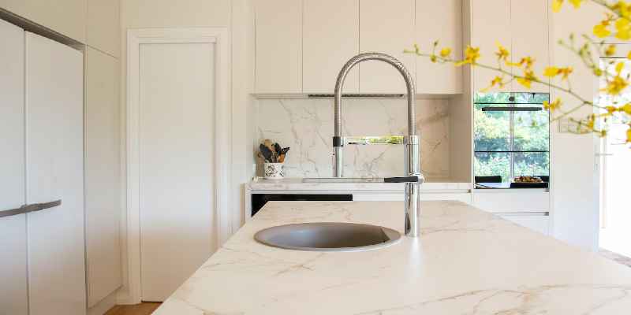
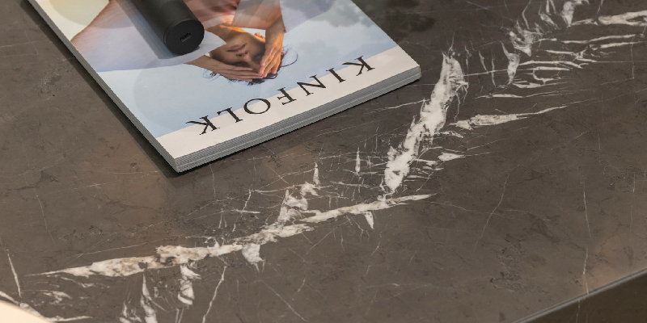
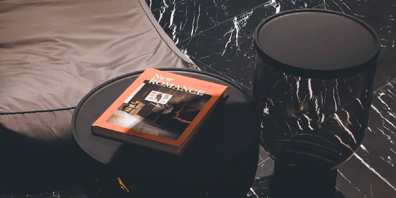
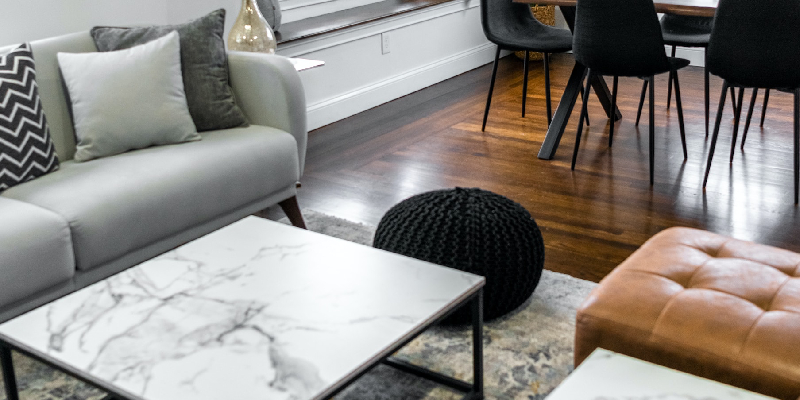

Marmoleria El Arte
Las mejores Piedras y Granitos de la ciudad
Bienvenido a Marmoleria y piedras "El Arte"
Trabajando desde hace 50 años para tu infraestructura. A continuacion les detallaremos de los diferentes tipos de piedras




¿Por qué elegirnos?
Gracias a nuestra experiencia acumulada, a la calidad insuperable de nuestros materiales y productos, y, sobre todo, a nuestro constante compromiso con la satisfacción del cliente, Marmolería El Arte se erige como la elección más destacada en el mercado.
Tenemos a nuestro alcance todo lo necesario para proporcionar productos y servicios que cumplen con los más altos estándares de excelencia, siempre a precios competitivos y sin comprometer los plazos de entrega acordados.